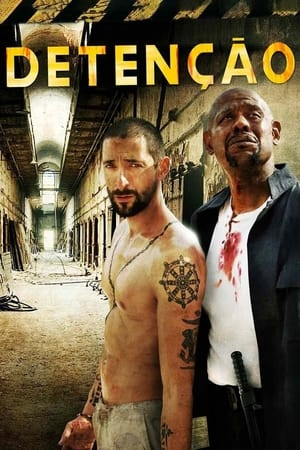
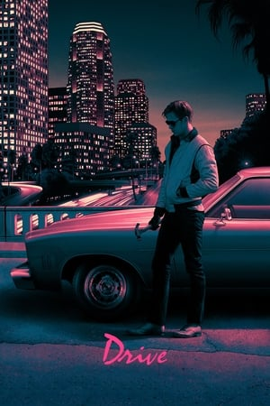
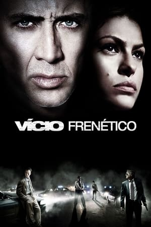

Quando um dos suspeitos do assassinato de sua mulher e filha é solto, Clyde quer vingança e decide fazer justiça com as próprias mãos. Clyde é preso e dentro da cadeia organiza uma matança para desmascarar o sistema judicial corrupto.



Codigo de Conduta é um filme de ação policial estadunidense de 2009 dirigido por F. Gary Gray. Primeiro filme produzido pelo ator Gerard Butler (em parceria com Lucas Foster, Mark Gill, Alan Siegel e Kurt Wimmer), o filme estreou nos EUA em 2009 e, já
na primeira semana, arrecadou US$ 21,3 milhões, ficando em segundo lugar nas bilheterias e repetindo a colocação na segunda semana.
Durante um assalto, Clyde Shelton (Gerard Butler) vê sua mulher e filha serem assassinadas brutalmente em sua própria casa. Quando os assassinos são capturados, o jovem procurador Nick Rice (Jamie Foxx) assume o caso, porém é obrigado a soltar um dos
envolvidos em troca de informações sobre um de seus cúmplices. Clyde não aceita ver o assassino de sua mulher e filha à solta e tenta impedir que o fato ocorra, mas não consegue evitar que o assassino seja solto. Então decide fazer,
ele mesmo, justiça pelos assassinatos das duas. Dez anos depois o assassino que havia sido solto é encontrado morto e Clyde assume a autoria do crime, avisando a Nick que um a um, os assassinos de sua familia serão mortos. Clyde é
preso, mas de sua cela consegue planejar e executar uma série de assassinatos que ninguém consegue prever.